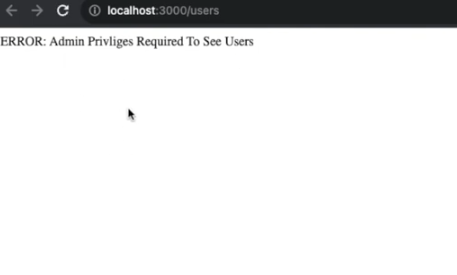

SQLite Admin/Guest Login System

The SQLite Admin/Guest Login System is a user authentication platform developed using JavaScript and Node.js with SQLite as the database. This system allows both admin and guest users to securely log in, each with different levels of access. Admins have full control over user management, while guest users can interact with limited features based on their permissions.
This project was developed to explore secure authentication practices, leveraging the simplicity and efficiency of SQLite for data storage. Admins are able to create, update, and manage user accounts, while guest users have restricted access to maintain the integrity of the system. The project provides a reliable and straightforward approach to managing user access in small-scale applications.
Features and Functionalities
Admin and Guest User Separation: The system differentiates between admin and guest users, providing distinct access levels. Admins have full control over the system, while guest users can only access a limited set of features.
User Authentication: Secure user authentication is implemented using hashed passwords, ensuring that sensitive user information is protected against unauthorized access.
Admin Dashboard: Admin users can manage accounts, including creating new users, updating user information, and deleting accounts. This allows admins to maintain control over who has access to the system.
Guest Access Features: Guest users have restricted access to certain features of the system. This separation ensures that guests cannot make critical changes, preserving system security.
Data Storage with SQLite: User credentials and other relevant data are stored in a SQLite database, offering a lightweight yet powerful solution for managing data in this application.

Check out the Demonstration
Watch the full demonstration of the SQLite Admin/Guest Login System in action:
Technologies Used
- JavaScript
- Node.js
- Express.js
- SQLite
- HTML/CSS